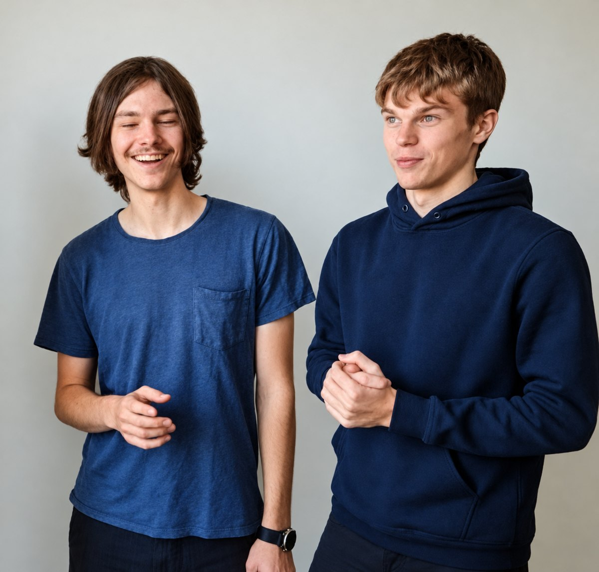

Egil Snodgrass
Co-founderLeads the customer projects and the integrations. Has paused his MSc studies in software engineering at Umeå University to focus fully on SNPS and the fast-moving AI ecosystem.
Vide Jacobson
Co-founderBuilds the integrations with the business systems. Studies for an MSc in software engineering at Umeå University.
Korey Snodgrass
Founder · ERP and productThirty years of ERP and product management, the last as a Business One architect for manufacturers in the Nordics. Brings the ERP experience to Busi.